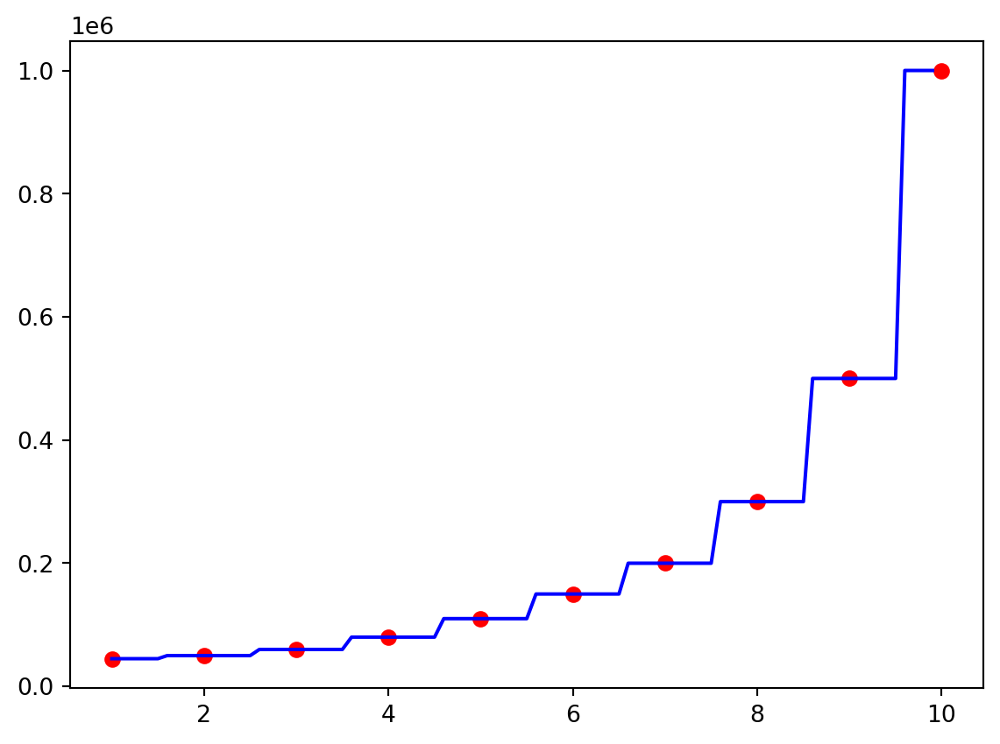

import pandas as pd
import numpy as np
import matplotlib.pyplot as plt
import warnings
warnings.filterwarnings('ignore')
dataset = pd.read_csv('_data/04.csv')
x = dataset.iloc[:, 1:-1].values
y = dataset.iloc[:, -1].valuesDecision Tree Regression
machine learning

- CART: Classification and Regression trees. 분류, 회귀 모두에 적용될 수 있는 알고리즘
- 회귀에서는 종속변수가 연속형 변수
Preprocessing
Modeling
from sklearn.tree import DecisionTreeRegressor
regressor = DecisionTreeRegressor()
# 모델 학습
regressor.fit(x, y)DecisionTreeRegressor()In a Jupyter environment, please rerun this cell to show the HTML representation or trust the notebook.
On GitHub, the HTML representation is unable to render, please try loading this page with nbviewer.org.
DecisionTreeRegressor()
Visualization
x_grid = np.arange(min(x), max(x), 0.1)
x_grid = x_grid.reshape((len(x_grid), 1))
plt.scatter(x, y, color='red')
plt.plot(x_grid, regressor.predict(x_grid), color='blue')
plt.show()